Music and Machine Learning Workshop
Posted by ehopkins on December 22, 2021
On 15 December 2021, the 14th annual Music and Machine Learning Workshop was held online, hosted by Rafael Ramirez (Universitat Pompeu Fabra, Spain), Darrell Conklin (University of the Basque Country, Spain), and José Manuel Iñesta (University of Alicante, Spain). This blog post is a really brief overview of the presentations; for more check out the Proceedings online.
José Manual Iñesta (pictured below) is also a visiting professor here at McGill this year, and a few members of our lab participated in the workshop too.
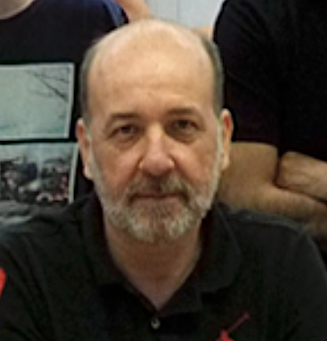
There were approximately 20 participants in the workshop, with topics including Roman Numeral Analysis, Optical Music Recognition, music demixing, and ways that music and machine learning draw on language, machine translation, and bioinformatics technologies. Each presentations was a quick 8 minutes followed by questions to give everyone a chance to catch up on each other’s research.
MultiScore Project: Multimodal Transcription of Music Scores
Jorge Calvo-Zaragoza, A. Pertusa, A.J. Gallego, José M. Iñesta, L. Micó, J. Oncina, C. Pérez-Sancho, P-J. Ponce de León, D. Rizo
Jorge is an associate professor at the University of Alicante (and was formerly a SIMSSA postdoc!) He presented an overview of the scientific work projects of his teams at the University of Alicante, focusing on OMR (Optical Music Recognition) and AMT (Automatic Music Transcription) and ways to explore their commonalities. In both cases, polyphonic music poses special challenges. Multimodal Music Transcription is their project to attempt to exploit synergies between AMT and OMR and develop a free online transcription service.
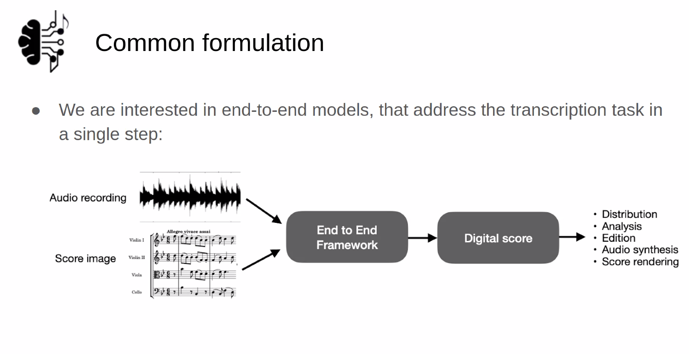
3-D motion generation for double bass performance from musical score
Shinji Sako, Takeru Shirai
Shinji discussed work incorporating visual dimensions of musical performance, in this case creating a motion dataset for double bass performance. Bowing and other position info is tracked for separate body parts so tehy can generate bot performance motion and sound from a score. To compare human motion to the generated motion, they assessed the accuracy of the 3D position, the time variation, and conducted subjective analysis of the “naturalness” as assessed by double bass players.
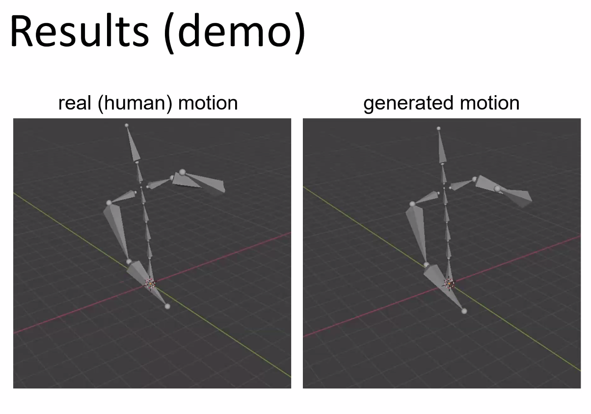
Playable Audio Texture Models
Lonce Wyse, Chitralekha Gupta, Purnima Kamath
Lonce presented work on data-driven generative sound model design, looking at ways of combining and generating new sounds as well as making these new models playable. There were some great examples, including a “Trumpinet” where you can hear the real-time transformation of timbre as you move across the space, shown below.
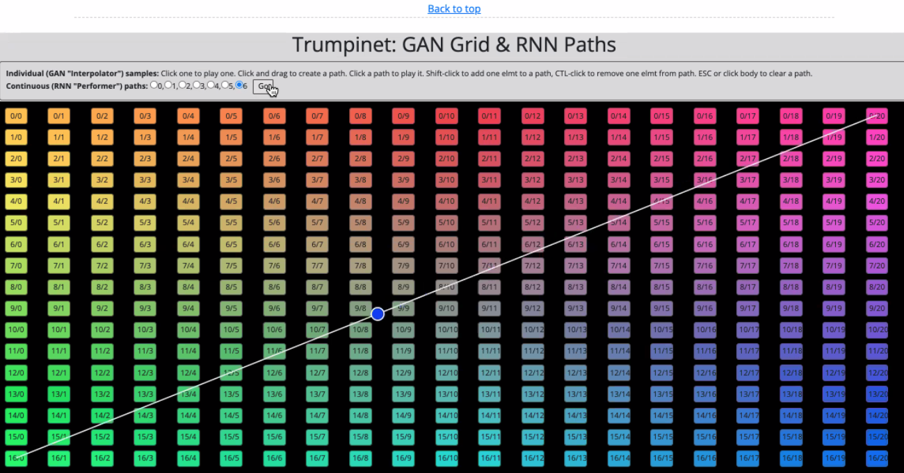
This example demonstrates a similar concept but including different textures.
Music demixing with the sliCQ transform
Sevag Hanssian
Sevag is a DDMAL Master’s student who shared his recent contribution to the ISMIR satellite music demixing conference, MDX. He gave an overview of some key principles and definitions for music demixing. Below, you can see how diferent sources have distinct spectral shapes (shown below), and that masks can be used to estimate them.
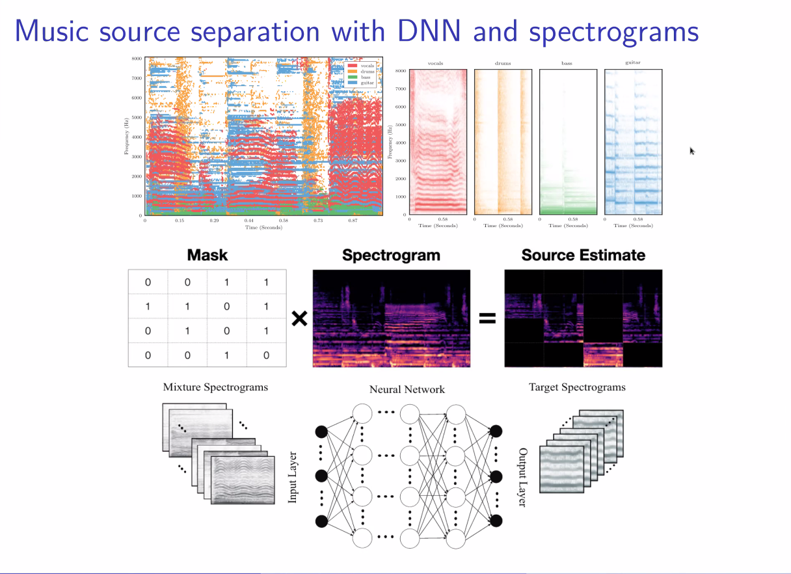
He also covered the idea of a phase performance ceiling; ie, phase is routinely discarded in this work because it’s very hard to model. As an example, here is the mix compared to the vocals; the difference is very hard to see: 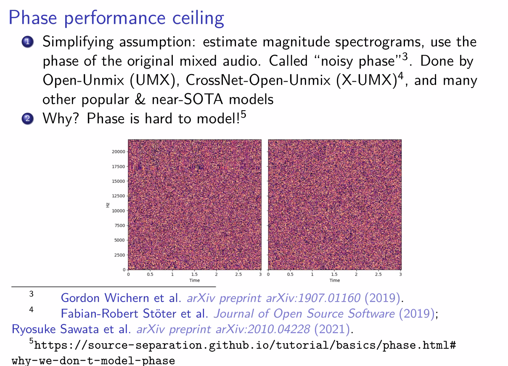
Check out his entry for the competition on GitHub
Generating expressive features of music performances with deep sequence models
Fabio Muneratti Ortega, Rafael Ramirez
Fabio presented recent work showing work on how to correlate score with audio using a model designed based in methods for language translation, as music scores also depend on sequence and context. Here is a look at the SkyNote software:
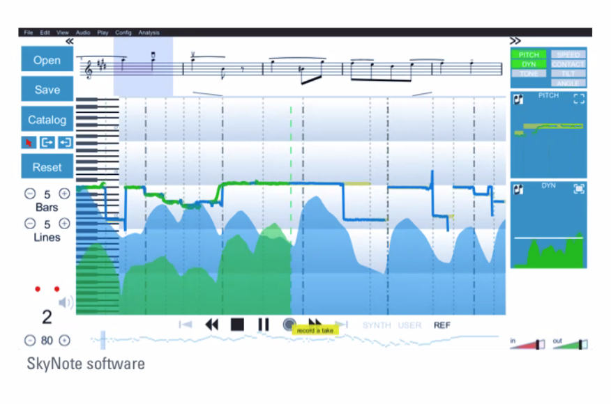
CTC-based end-to-end approach for full page Optical Music Recognition
Antonio Ríos-Vila, Jorge Calvo-Zaragoza, José M. Iñesta
This presentation focused on attempts to move from a multi-stage process for OMR (where error accumulates at each successive step) to a CTC (Connectionist Temporal Classification)-based approach. They have had some success applying this technique with a synthetic situation corpus, and determined that they had some succes “when there is abundance of data and the corpora is of a printed nature”; future work will look at real-world scenarios with less data.
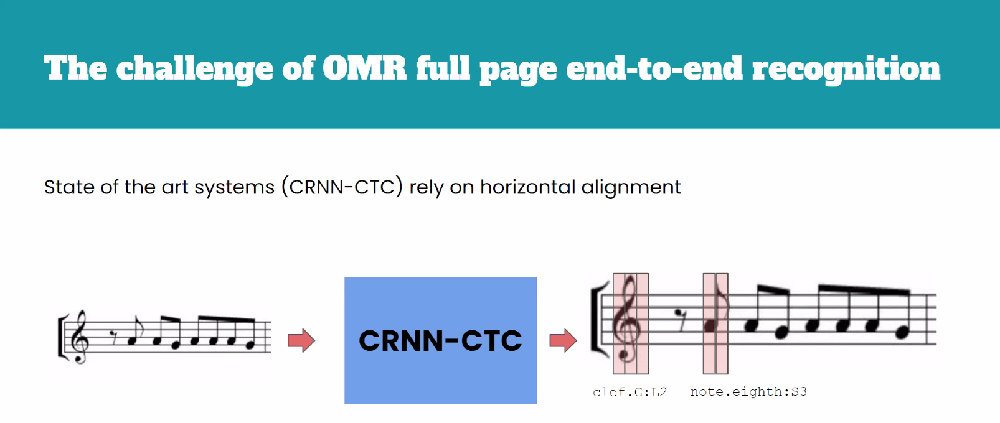
AugmentedNet: A Convolutional Recurrent Neural Network for Automatic Roman Numeral Analysis with Improved Data Augmentation
Néstor Népoles López, Mark Gotham, and Ichiro Fujinaga
Néstor presented a multi-task layout for Roman Numeral Analysis, identifyng new tasks to improve performance. Sepcifically, he presented on the development and use of synthetic training exmaples, using certain musical tricks to get closer to the rich texture of real music. In the example below, musical textures are added to the harmonic framework to make synthetic examples more musical:
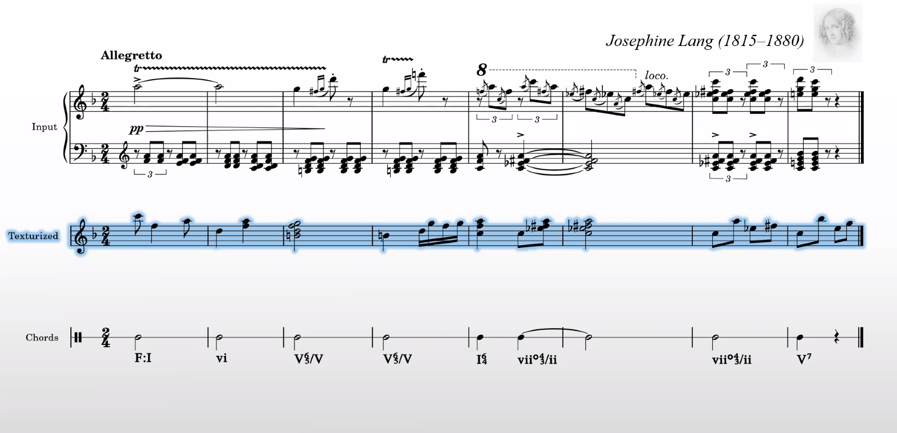
Error modeling and correction in Automatic Music Transcription via note-level Music Language Models
Jose J. Valero-Mas, Andrew McLeod
This presentation focused on the automatic music transcription side of things, showing how Music Language Models can be used. The idea is that these models provide a canonical example that can be used as a basis for comparison to help with automatic detection of errors.
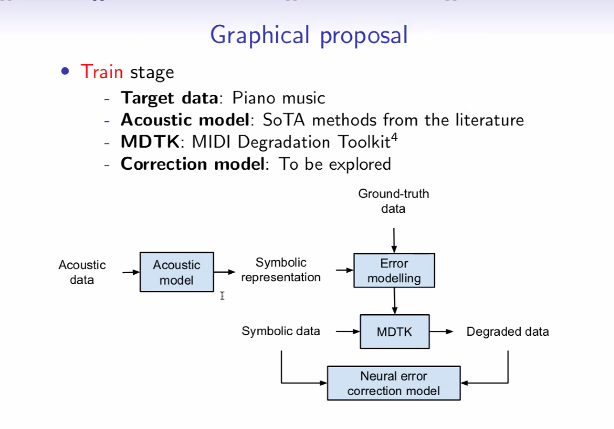
An Unsupervised Domain Adaptation framework for Layout Analysis of Music Score Images
Francisco J. Castellanos, Antonio Javier Gallego, Jorge Calvo-Zaragoza
In this presentation, we got an overview of ways to approach layout analysis for OMR by applying data from one domain (annotated manuscript) to a new one (not yet annotated manuscript) to speed up that process.
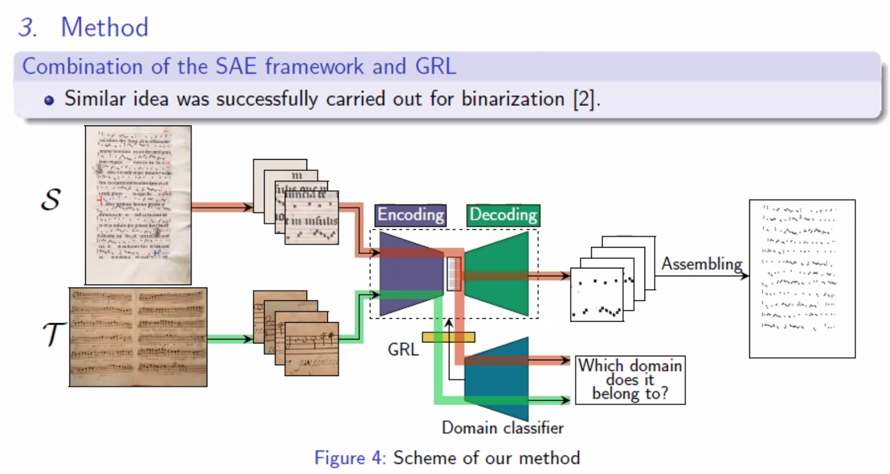
Error Detection in Symbolic Music for OMR Post-Processing
Timothy de Reuse, Ichiro Fujinaga
OMR makes lots of unmusical errors – can we automate the highlighting of these errors to make corection less tedious?
The work Tim presented is focused on detecting what looks wrong automatically to speed up correction. He uses the Needleman-Wunsch algorithm from bioinformatics to detect errors with sequence alignment.
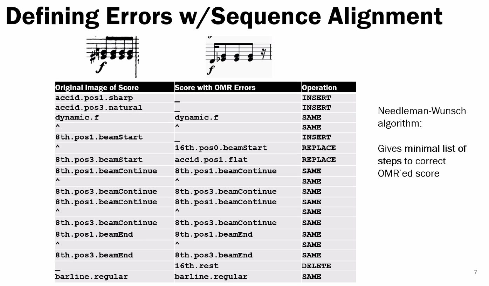
Thanks to everyone who presented and all the best with your work in 2022!